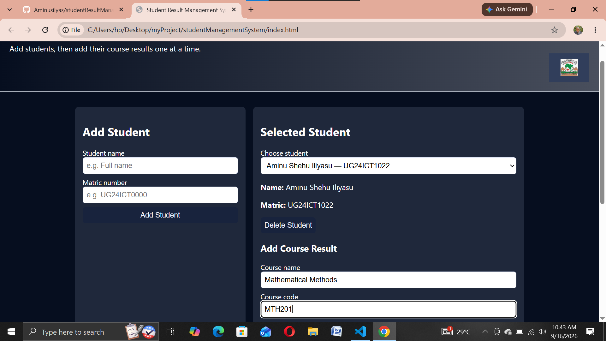
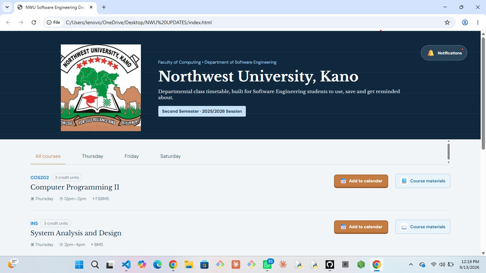
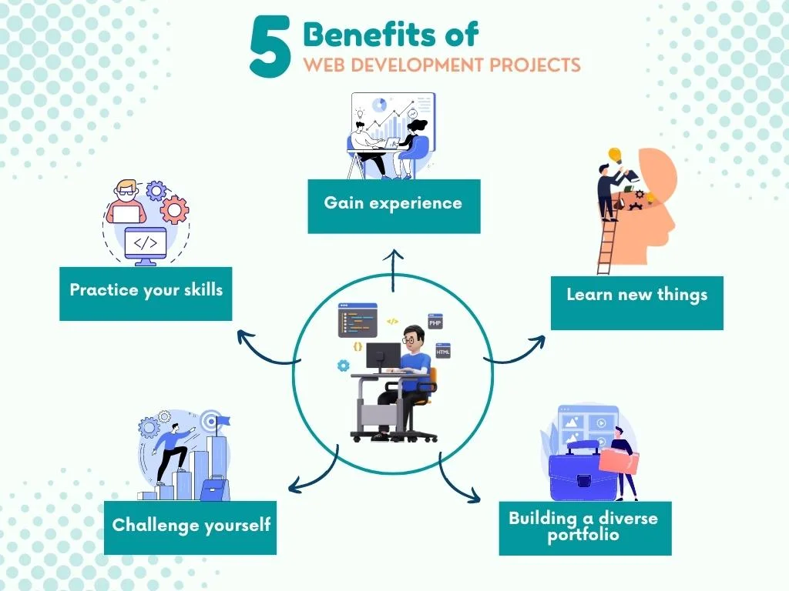

Student Result Management
Responsive Student Result Management System with real-time updates and reporting that earses work.
View case study →A few highlights — click to view or read details.

Responsive Student Result Management System with real-time updates and reporting that earses work.
View case study →
Interactive class Time Table with add to calendar functionality and other features.
View case study →
5 benefits of web development is shown to pull our minds close to the web.
View case study →